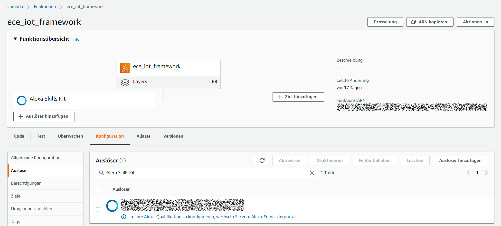

Lambda function for Alexa Skill
In this part some basic part of the Lambda function for our Alexa Skill explained. The Lambda function and the Alexa Skill communicate via the exchange of JSON files. The JSON files must always have a correct format, otherwise an error will occur. Our function was written in Python. Node.js is also supported.
Conection to the Lambda Function
First you have to select the Alexa Skill as a trigger event. To do this, you must enter the Skill-ID

Lambda Handler
def lambda_handler(event, context):
print("event.session.application.applicationId=" +
event['session']['application']['applicationId'])
print("event:" + json.dumps(event))
if event['session']['new']:
on_session_started({'requestId': event['request']['requestId']},
event['session'])
if event['request']['type'] == "LaunchRequest":
return on_launch(event['request'], event['session'])
elif event['request']['type'] == "IntentRequest":
return on_intent(event['request'], event['session'])
elif event['request']['type'] == "SessionEndedRequest":
return on_session_ended(event['request'], event['session'])
Intent Connection Handler
def on_intent(intent_request, session):
print("on_intent requestId=" + intent_request['requestId'] +
", sessionId=" + session['sessionId'])
intent = intent_request['intent']
intent_name = intent_request['intent']['name']
print("***********************intent section***************************")
print(intent_name)
if intent_name == "TimInt":
return handle_timintent_request(intent, session)
elif intent_name == "MichaelInt":
return handle_michaelintent_request(intent, session)
elif intent_name == "DanielInt":
return handle_danielintent_request(intent, session)
elif intent_name == "JanInt":
return handle_janintent_request(intent, session)
elif intent_name == "MarkusInt":
return handle_markusintent_request(intent, session)
elif intent_name == "AMAZON.HelpIntent":
return handle_get_help_request(intent, session)
elif intent_name == "AMAZON.StopIntent":
return handle_finish_session_request(intent, session)
elif intent_name == "AMAZON.CancelIntent":
return handle_finish_session_request(intent, session)
else:
raise ValueError("Invalid intent")
Custom Intent Handler
def handle_timintent_request(intent, session):
should_end_session = False
user_gave_up = intent['name']
reprompt_text = "Don't you want to know who you really are, just ask {}".format(SKILL_NAME)
sensor_result = sensor((intent['slots']['tim_sensortype']['value']), ("esp32_tim"), ("Lab 124"))
sensor_result_unit = sensor_unit((intent['slots']['tim_sensortype']['value']), ("esp32_tim"), ("Lab 124"))
speech_output=("The result of the sensor query is {:0.2f} {} in Lab 124".format(sensor_result, sensor_result_unit))
print(speech_output)
return build_response(
{},
build_speechlet_response(
SKILL_NAME, speech_output, reprompt_text, should_end_session
))
This is a custom skill handler. It is only called when the TimIntent is called.
In our project, we used the slot to pass the respective sensor type, which is read out of the JSON file.
To get the sensor value, another function is called to read the data from Timestream.
After that, everything is passed as a response so that Alexa can read it out.
Timestream Query Function
def sensor(type, device, room):
timestream = boto3.client('timestream-query')
location = room
database_name = "measurement_fleet"
table_name = device
sensor = type
QUERY = \
"SELECT * " \
"FROM " + database_name + "." + table_name +" " \
"WHERE SensorType='"+sensor+"' and Location='"+location+"' " \
"ORDER BY time DESC " \
"LIMIT 1"
response = timestream.query(QueryString=QUERY)
result = float(response['Rows'][0]['Data'][3]['ScalarValue'])
return result
This the function to get the measurement data from Timestream. The Boto3 library from Amazon is used for this purpose. You can simply make an SQL query and get the data you are looking for.